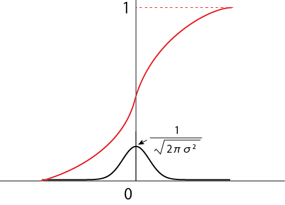

ランダムな数の発生方法-04
３．正規分布
次に，正規分布をしているを考えていきましょう．
\(\Large P(x) \propto e^{- \frac{x^2}{2 \sigma^2}} \)
規格化条件は，
\(\Large 1 = \int_{- \infty}^\infty P(x) dx = \int_{- \infty}^\infty A e^{- \frac{x^2}{2 \sigma^2}} dx \)
となります．積分範囲が-∞から∞になることに注意してください．積分公式，
\(\Large \int_{- \infty}^\infty e^{- a \ x^2} dx = \sqrt{ \mathstrut \frac{\pi}{a}} \)
より，
\(\Large \begin{eqnarray} 1 &=& \int_{- \infty}^\infty A e^{- \frac{x^2}{2 \sigma^2}} \\
&=& A \sqrt{ \mathstrut \frac{\pi}{\frac{1}{ 2 \ \sigma^2}}} \\
&=&
A \sqrt{ \mathstrut 2 \ \pi \ \sigma^2} \\
\end{eqnarray} \)
\(\Large A = \sqrt{ \mathstrut 2 \ \pi \ \sigma^2} \)
\(\Large P(x)= \frac{1}{\sqrt{ \mathstrut 2 \ \pi \ \sigma^2}} e^{- \frac{x^2}{2 \sigma^2}} \)
となります．
累積密度関数は，
\(\Large \int_{-\infty}^x P(m) dm = \frac{1}{\sqrt{ \mathstrut 2 \ \pi \ \sigma^2}} \int_{-\infty}^x e^{- \frac{t^2}{2 \sigma^2}} dt \)
となります．積分範囲が-∞からxになることに注意してください．

なので，
\(\Large Rand_{0-1} = \frac{1}{ \sqrt{ \mathstrut 2 \ \pi \ \sigma^2}} \int_{-\infty}^x e^{- \frac{t^2}{2 \sigma^2}} dt \)
となります．
ランダム関数からｘを求めるには，上記の式の逆関数，誤差関数を使えばいいことになります．
では，誤差関数を使って表してみましょう．